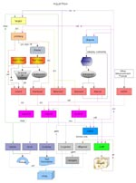

ArgyllCMS documentation index (V2.1.2)
Date: 14th April 2020
Author: Graeme Gill
Introduction
ArgyllCMS is an ICC compatible color management system, available as
Open Source. It supports accurate ICC profile creation for scanners,
cameras and film recorders, and calibration and profiling of
displays and RGB, CMY & CMYK printers. Device Link can be
created with a wide variety of advanced options, including
specialized Video calibration standards and 3dLuts. Spectral
sample data is supported, allowing a selection of illuminants
observer types, and paper fluorescent whitener additive
compensation. Profiles can also incorporate source specific gamut
mappings for perceptual and saturation intents. Gamut mapping and
profile linking uses the CIECAM02 appearance model, a unique gamut
mapping algorithm, and a wide selection of rendering intents. It
also includes code for the fastest portable 8 bit raster color
conversion engine available anywhere, as well as support for fast,
fully accurate 16 bit conversion. Device color gamuts can also be
viewed and compared with a modern Web browser using X3DOM .
Comprehensive documentation is provided for each major tool, and a
general guide to using the tools for typical color management tasks
is also available. A mailing list provides support for more advanced
usage.
This is Version 2.1.2, a bug fix update to the last release
V2.1.1. The first public release of icclib was in November 1998,
and of ArgyllCMS was in October 2000. Code development commenced
in 1995. See Changes Summary
for an overview of changes since the last release. Changes between
revisions is detailed in the log.txt file that accompanies
the source code.
The latest source code is available from here.
Please
note that instruments are being driven by ArgyllCMS drivers,
and that any problems or queries regarding instrument
operation should
first be directed to the Argyll's author(s) or the Argyll
mailing list, and not to any other party.
A great introduction for non technical people is Steve Upton's The
Color of Toast.
I present here a more technical but concise
discussion of what color management is, and why we need it,
together with a brief overview of the ICC profile format.
Operating Environments
Argyll is known to compile and run in at least the following
environments:
1) MSWindows XP system using Microsoft VC++ 6.0 compiler
2) MSWindows XP system using Microsoft VC++ 8.0 Express compiler +
Platform SDK Feb. 2003
3) MSWindows XP system using Microsoft VC++ 9.0 Express compiler +
Platform SDK Feb. 2003
4) MSWindows XP system using Microsoft VC++ 10.0 Express compiler +
Platform SDK Feb. 2003
5) MSWindows XP system using Microsoft VC++ 11.0 Express compiler
6) MSWindows XP system using the MingW port of the GCC compiler
7) Linux on Fedora Core 8, 32 bit using gcc
8) Linux on Fedora Core 8, 64 bit using gcc
9) Apple OS X 10.3 PPC using GCC
10) Apple OS X 10.4, 10.5, 10.6 Intel using GCC
11) Apple OS X10.7 Intel using Clang
12) Apple OS X10.12 Intel using Clang
Additionally it is also known to run on:
MSWindows 2000, Vista & Windows 7 - 32 bit.
MSWindows Vista 64bit, Windows 7, 8, 8.1, 10 - 64 bit.
but may well compile and run correctly in many more than this.
This is a command line terminal
only environment. Those unfamiliar with command line environments
should consult an appropriate tutorial for their environment if they
are interested in using this software. See the listing of tutorials below.
The following color measuring instruments are directly supported:
JETI:
specbos 1211
& 1201
- Tele-Spectro-Radiometer
spectraval
1511& 1501
- Tele-Spectro-Radiometer
Image Engineering:
EX1
- Tele-Spectro-Radiometer
Klein:
K10-A
- Display Colorimeter. Reported also to work with
the K-1, K-8 and K-10.
X-Rite:
DTP20 "Pulse"
- "swipe" type reflective spectrometer, that can be used untethered.
DTP22 Digital
Swatchbook
- spot type reflective spectrometer.
DTP41
- spot and strip reading reflective spectrometer.
DTP41T
- spot and strip reading reflective/transmissive spectrometer.
DTP51
- strip reading reflective colorimeter.
DTP92
- CRT display colorimeter.
DTP94 "Optix XR" or "Optix XR2" or "Optix Pro"- display
colorimeter.
ColorMunki Design
or Photo or i1Studio
- spot and "swipe"
reflective/emissive spectrometer (UV cut only).
[ The
OEM XEROX PhaserMeter is also reported to work. ]
ColorMunki Create
or Smile
- display
colorimeter. (Similar to an Eye-One Display 2)
Lenovo W
-
built in laptop Huey display colorimeter.
Eye-One Display
3
- Xrite i1 DisplayPro and ColorMunki
Display
[ The OEM
i1Display Pro, NEC SpectraSensor Pro,
Quato Silver Haze 3 OEM, HP
DreamColor & Wacom i1d3 are also reported to work.]
Eye-One Pro2
- spot and
"swipe" reflective/emissive spectrometer.
Gretag-Macbeth (now X-Rite):
Spectrolino
- spot
reflective/emissive spectrometer.
SpectroScan
- spot
reflective/emissive, XY table reflective spectrometer .
SpectroScanT
- spot
reflective/emissive/transmissive, XY table reflective spectrometer.
Eye-One Pro, "EFI
ES-1000" - spot and "swipe"
reflective/emissive spectrometer.
Eye-One Monitor
- spot and "swipe" emissive
spectrometer.
Eye-One Display 1
or 2 or LT -
display colorimeter.
HP DreamColor or
APS
- display colorimeter. (Treated as a Eye-One Display 2)
CalMAN X2
- display colorimeter. (Treated as a Eye-One Display 2)
Huey
- display colorimeter.
Sequel imaging (Now X-Rite):
MonacoOPTIX
- display
colorimeter (Treated as an Eye-One Display 1)
[The Sequel Chroma 4 & 5, and Sencore ColorPro V, IV & III
also work.]
Lacie Blue
Eye:
- see Eye-One Display
DataColor ColorVision:
Spyder 2
- display colorimeter (Note
that the user must supply firmware)
[The Spyder 1 has also been reported as working, but this has not
been confirmed.]
Spyder 3
- display colorimeter.
Spyder 4
- display colorimeter (Note
that the user must supply calibration
data)
Spyder 5
- display colorimeter (Note
that the user must supply calibration
data)
SpyderX
- display colorimeter
Other:
Colorimètre HCFR
- display colorimeter
ColorHug
and
ColorHug2
- display colorimeter
Palette/SwatchMate
Cube
- reflective colorimeter
See Operation of particular
instruments for more instrument specific detail.
Other instruments can be supported indirectly, since patch result
files created by other packages can be imported into Argyll.
Please note the installation instructions
for each platform - they contain important information for getting
your instruments working.
If you've decided to buy a color instrument because Argyll
supports it, please let the dealer and manufacturer know that "You bought it because ArgyllCMS
supports it" - thanks.
Please note that instruments are
being driven by ArgyllCMS drivers, and that any problems or
queries regarding instrument
operation should be
directed to the Argyll's author(s) or the Argyll mailing list,
and not to any other
party.
There is a list of contributed ccss (Colorimeter Correction
Spectral Sample) files for some displays.
There is a list of contributed ccmx (Colorimeter Correction
Matrix) files for some display/colorimeter combinations.
Copyright, Licensing & Trade Mark:
Most of the source code and provided executable files are
copyrighted works, licensed under the Affero GNU Version 3 license, and therefore they
(or works derived from them) can't be copied, sold or made
available to users interacting with them remotely through a
computer network, without providing the source code. Nothing other
than your agreement and compliance with the Affero GNU License
grants you permission to use, modify or distribute ArgyllCMS
source code, executables or its derivative works. You could be
sued for copyright infringement if you use or distribute ArgyllCMS
without a valid license. The Affero
GNU license prohibits
extending these tools
(i.e. by combining them with other programs or scripts that make
use of, depend on, or work with the ArgyllCMS code) and
distributing them, unless all the elements of the extensions are
also made available under a GPL compatible license. It is
permissible to provide ArgyllCMS tools with other non GPL
components if the elements of the package are not related, such
that the packaging is mere aggregation. For all the gory details,
please read the accompanying license.
Please note that if you wish to incorporate or make use of
the code in commercial and closed source products, that
you will need to negotiate a commercial license to do so. Many
portions of the ArgyllCMS code are very technically specialized
and took a great deal of expertise and time to develop, and
licensing cost will reflect this. Successfully negotiating a
commercial license is not certain, so it is strongly advised that
commercial products making use of ArgyllCMS not be developed
until such a licensing agreement is in place.
Note that unlike many commercial ICC profiling tools, the profiles
created using ArgyllCMS, are not subject to any claims or
restrictions of ArgyllCMS's author(s), but are assumed to be the
copyright property of the person who gathers the characterization
data, and causes the profiles to be created.
The ArgyllCMS is Copyright 1995 - 2016 Graeme W. Gill, and is
made available under the terms of the Affero GNU General Public
License Version 3, as detailed in the License.txt
file. Documentation is licensed under the terms of the GNU Free
Documentation License, Version 1.3. The author asserts his moral
rights over this material in relationship to the attribution and
integrity of these works. In particular, if these works are
modified in a way that materially changes their functionality,
then the modified works should be renamed in a way that clearly
distinguishes them from "Argyll" or "ArgyllCMS" so that the
effects of such changes do not reflect on the original works
integrity or the original authors reputation.
A subset of files (those that are related to the color instrument
drivers, and are collected together into the instlib.zip archive
by the spectro/instlib.ksh script + xicc/ccmx.h and xicc/ccmx.c)
are licensed under the General Public License Version 2 or later,
as detailed in the License2.txt file.
Portions of the ColorHug instrument library
(spectro/colorhug.[ch]) are Copyright 2011, Richard Hughes, and is
licensed under the General Public License Version 2 or later, as
detailed in the License2.txt file.
The tool spectro/spec2cie.c is Copyright 2005 Gerhard Fuernkranz,
and is made available under the terms of the GNU General Public
License Version 2 or later, and is licensed here under the Version
3 license, as detailed in the License3.txt
file.
The Win32 USB library libusb-win32 kernel drivers are included in
this distribution in the usb/driver and usb/bin directories, and
are copyright Stephan Meyer and Travis Robinson, and are licensed
under the GNU Version 2 or later (the drivers, services,
installer). See usb/driver/License.txt,
libusbw/COPYING_LGPL.txt and libusbw/COPYING_GPL.txt for details.
Additional terms noted on the website
are "This license combination explicitly allows the use of this
library in commercial, non-Open-Source applications."
The icc library in icc/,
the CGATS library in cgats/,
the jcnf library in jcnf/,
the files spectro/xdg_bds.*,
spectro/aglob.* and the
ucmm library in ucmm/ are
Copyright 1995 - 2015 Graeme W. Gill, and available according to
the "MIT" permissive free software license granted in the License4.txt file, and the licenses at
the top of ucmm/ucmm.c and jcnf/jcnf.c.
The yajl library in yajl/
is Copyright (c) 2007-2014, Lloyd Hilaiel <me@lloyd.io> and
is used under an ISC permissive free software license granted in
the yajl/COPYING files. The yajl library has been repackaged and
modified slightly to adds some features and for packaging and
build convenience.
The TIFF library included in this distribution for convenience,
has its own copyright and license detailed in tiff/COPYRIGHT (an
"MIT"/"BSD" like permissive free software license).
The Independent JPEG Group's JPEG library included in this
distribution for convenience, has its own copyright and license
detailed in jpg/README (an "MIT"/"BSD" like permissive free
software license). Executables that include JPEG format support
are based in part on the work of the Independent JPEG Group.
xicc/iccjpeg.h and xicc/iccjpeg.c are from lcms and they are Copyright
(c) 1998-2010 Marti Maria Saguer and is licensed under an
"MIT"/"BSD" like permissive free software license. See the top of
the iccjpeg.c file for the detailed copyright and licensing
conditions.
The mongoose web server software is Copyright (c) 2004-2011
Sergey Lyubka, and is licensed under an "MIT" permissive free
software license.
The axTLS library is Copyright (c) 2008, Cameron Rich, and the
license is detailed in ccast/axTLS/LICENSE file (an "MIT"/"BSD"
like permissive free software license).
It has been modified to permit multiple threads to use it, but is
not used for any security sensitive purpose, but is used purely to
enable communication with the ChromeCast in a portable fashion.
The X3DOM x3dom.css and
x3dom.js files are Copyright (C) 2009 X3DOM and licensed dual
"MIT" permissive free software and "GPL" license. See
plot/X3DOM_LICENSE.txt.
"ArgyllCMS" is a trade mark. It is permissible to refer to
copies or derivatives of this software as being the same as
ArgyllCMS if they are materially unchanged, and retain all the
functionality provided by the software made available at
www.argyllcms.com. Modified versions of this software that are
materially changed or have missing functionality must be clearly
marked as such, so as not to to be confused with ArgyllCMS.
What sort of project is this ? (re:
contributions)
This is essentially my private project, that I've made available
under GNU licensing conditions. Because I license my code under
other licenses as well, there is a limit to what I will accept in
the way of code contributions back into this project. For me to
accept contributions into the distribution, it either has to a
non-core (side) project, or has to be offered to me with copyright
conditions that are compatible with my other uses (i.e.. a "BSD" or
"MIT" like permissive free software license, or assigning or
licensing the copyright to me), or has to be so trivial (say a one
line bug fix), that it can't be the subject of copyright.
Of course there is nothing to stop someone setting up a real free
software, community project based on the GNU licensed code made
available here, that would be able to take GNU licensed
contributions from everyone and would essentially be a "fork" of
this code base.
How to build the software from the
source if you want to.
Note that you don't need to
do this if you are using one of the binary installations.
Important notes on installing the binary
software on various platforms.
Graphic
User Interfaces
ArgyllCMS does not directly support a graphic user interface, but
several people have written GUI
based front ends for it. A popular front
end
that
supports
display
calibration
and profiling is DisplayCAL by
Florian Höch. For print profiling, you might like to take a look at
The
Little Argyll GUI by Russell Cottrell, and for cameras or
scanners, CoCa by Andrew
Stawowczyk Long.
Others can be found with a suitable search.
Main
Tools and the command line
These are all command line ("DOS" shell) tools, and each tool
require appropriate options to be set, followed by filename
arguments. Sometimes the filenames will have to include the usual
extensions, sometimes they are implicit. To get a brief listing of
the possible arguments and usage
of any of the tools, run it with just an "-?" argument, i.e. targen
-? (or some other unrecognized flag, if the "?" character is
treated specially in your shell, i.e. try "--" on OS X zsh).
Note that in general the arguments consist of possible flags or
options followed by file path+name arguments. All arguments need to
be separated by whitespace. (If you need to specify a string
with embedded white space, double quote the string). A flag consists
of a dash attached to a single letter, the letter identifying the
flag, and is usually case sensitive. An option is a flag that has an
associated parameter or parameters. The parameter can be separated
from the flag by white space, or may come directly after the flag.
So if a tool has a usage that looks like this:
tool -?
usage: tool [options] infile outfile
-v
Verbose mode
-d
n
Choose a depth 0-4
-r
Use a random depth
-f
[nn]
Use full range. nn optional range 0 - 100.
-M
Manual
infile
Input file
outfile
Output file
then there are 5 flags/options, and two filename arguments.
Notice that square braces [] denote optional items. The first
flag/option is a flag. The second is an option that has a numerical
argument in the range 0 to 4. The third is a flag. the fourth is an
option with an optional argument. The fourth is a flag. The
flags and options can generally be in any order, but must be before
the file name arguments. (For a few special tools you actually
specify a sequence of flags and files where the flags apply just to
the following file.) So example invocations may look like:
tool -v testin testout
tool -d3 -M testin1 testout2
tool -f infile outfile
tool -f 45 infile outfile
tool -d 3 -f67 infile outfile
In order to make use of the tools, it is necessary to keep track
of where various files are, and what they are called. There are
many possible ways of doing this. One way is to put each source
profile and all its associated files (test charts, spectrometer
values etc.) in one set of directories for each source profile
type. Similarly the device profiles could be stored in a hierarchy
of directories ordered by device type, media, resolution, device
mode etc. Naturally you will want to set your $PATH so that you
can run the tools from whichever directory you are in, as well as
specify any necessary directory paths for file arguments so that
the tools are able to open them.
Note that there are two ways the Argyll tools deal with filename
extensions. In one you supply the extension (ie. you supply the
whole file name), so the extension is up to you. In the other
(used where one name is used for input and output files, or where
there are multiple output files), the program adds the extension.
In the documentation this should be indicated by calling it a
"base name".
For more information on using a command
line environments, consult an appropriate tutorial:
MS Windows :
<http://www.bleepingcomputer.com/tutorials/tutorial76.html>
<http://www.pcstats.com/articleview.cfm?articleid=1723&page=1>
<http://www.voidspace.org.uk/python/articles/command_line.shtml>
To find more: <http://www.google.com/search?hl=en&q=windows+command+prompt+tutorial>
OS X:
<http://www.osxfaq.com/Tutorials/LearningCenter/>
<http://www.atomiclearning.com/macosxterminalx.shtml>
<http://www.oreillynet.com/pub/a/mac/2001/12/14/terminal_one.html>
To find more: <http://www.google.com/search?hl=en&q=OS+X+shell+tutorial>
Linux:
<http://www.linuxcommand.org/index.php>
<http://www.tuxfiles.org/linuxhelp/shell.html>
<http://www.ee.surrey.ac.uk/Teaching/Unix/>
To find more: <http://www.google.com/search?q=linux+command+line+shell+tutorial>
Note that since OS X is
based on UNIX, there is much in common between the OS X and Linux
command line environments, and many of the UNIX tutorials may be
useful:
<http://www.rain.org/~mkummel/unix.html>
A guided tour of the major tools,
applied to typical CMS jobs, such as calibrating displays, creating
device profiles, calibrating printers, linking profiles, and
converting color spaces of raster files.
Although it is is a couple of years old now, this tutorial
may also be of interest.
Topical
Discussions
Discussions about particular topics:
About Fluorescent Whitening Agent compensation
Operation of particular instruments
About ICC profiles and Gamut Mapping
About display monitor settings and
targets
About display "Gamma"
What's the difference between Calibration
and Characterization ?
Why doesn't my Colorimeter work
well on my Wide Gamut display ?
My blacks get crushed on my
display - why ? How do I fix it ?
How can I have confidence in the i1pro
Driver ?
Does the i1pro High Resolution mode
improve accuracy ?
Evaluating input targets
ArgyllCMS's Absolute to media
Relative Transform Space matrix ('arts') ICC tag
Flow
diagram of Major Tools:

Main Tools by
category:
Calibrating devices
dispcal
Adjust,
calibrate and profile a display.
printcal Create a
printer calibration .cal file from a .ti3 data file.
Creating test targets for profiling or print calibration
targen
Generate a profiling test target values .ti1 file.
filmtarg Create
film recorder TIFF files from Argyll .ti1 file.
printtarg Create
a PS, EPS or TIFF file containing test patch values, ready for
printing.
Obtaining test results for profiling or print calibration
chartread Read
a test chart using an instrument to create a .ti3 data file.
dispread Test
and read colorimetric values from a display
filmread Read
film colorimetric values using a SpectroScanT (Deprecated ?)
scanin
Convert a TIFF image of a test chart into .ti3
device values.
illumread Use an
instrument to measure an illuminant spectrum, and estimate its UV
content.
fakeread Fake
the reading of a device using an ICC or MPP profile.
synthread Fake the
reading of a device using a synthetic device model.
cb2ti3
Convert Colorblind format CMY/RGB test chart into
Argyll .ti3 CGATS format.
kodak2ti3 Convert
Kodak Colorflow format CMYK test chart into Argyll .ti3 CGATS
format.
txt2ti3
Convert Gretag/Logo/X-Rite/Barbieri or other format
RGB or CMYK test chart results into Argyll .ti3 CGATS format.
cxf2ti3
Convert X-Rite CxF3 format reference and test
charts into .cie or Argyll .ti3 CGATS format.
ls2ti3
Convert LightSpace format RGB .bcs test chart
results into Argyll .ti3 CGATS format.
fakeCMY
Create a fake Argyll .ti3 CMY data file from a CMYK
profile, as a basis of creating a CMY to CMYK separation
average Average
or Merge two or more measurement data files, or average patches
within a single file.
Creating Device Profiles
colprof
Create an ICC profile from the .ti3 test data.
mppprof
Create a Model Printer Profile (MPP) from the .ti3
test data.
revfix
Regenerate a device profiles B2A table data by
inverting the A2B table.
Creating Device Link Profiles
collink
Link two device ICC profiles to create a device
link profile.
Converting colors or applying print calibration
cctiff
Color convert a TIFF or JPEG file using a sequence
of ICC device, device link, abstract profiles and calibration files.
applycal Apply
calibration curves to an ICC profile.
icclu
Lookup individual color values through any ICC
profile table.
xicclu
Lookup individual color values forward or inverted
though an ICC profile or CAL table.
mpplu
Lookup individual color values though an MPP
profile. Also create MPP gamut files/views.
greytiff Convert
a TIFF file to monochrome using an ICC device profile
Color Tweaking tools
refine
Creates an
abstract profile from two chart readings, useful for refining
proofing profiles.
Creating gamut views
iccgamut Create
a gamut file or VRML file of the color gamut of an ICC profile.
tiffgamut Create
a gamut file or VRML file of the color gamut of a TIFF or JPEG
image.
viewgam
Convert one or more gamuts into a VRML 3D
visualization file. Compute an intersection.
Diagnostic and test tools
iccdump
Dump the contents of an ICC profile as text.
profcheck Check
an ICC profile against .ti3 test chart data, create pruned .ti3
file.
invprofcheck
Check ICC forward against inverse lookup.
splitsti3 Split
a CGATS file (ie. a .ti3) into two parts randomly to verify
profiling.
timage
Create TIFF test
images.
mppcheck Check
an MPP profile against .ti3 test chart data.
spotread Use
an instrument to read a single spot color value.
colverify Verify
matching of CIE in two CGATS/.ti3 files (also view differences as
VRML)
synthcal Create
a synthetic input, display or output calibration (.cal)file.
Other Tools
ccxxmake Use
a Spectrometer to create a Colorimeter Correction Matrix
(CCMX) or a Colorimeter Calibration Spectral Set (CCSS)
for a particular display.
extracticc Extract
an embedded ICC profile from a TIFF or JPEG file.
extractttag Extract a text tag (ie. CGATS
.ti3 data or CAL) from an ICC profile.
dispwin Install
or uninstall display profile, set display calibration from profile
or .cal file, test displace and dispwin access to a display.
oeminst
Install Instrument manufacturers files for the
Spyder 2, EDR or CCSS calibration files for i1d3 or Spyder 4 or
5, CCMX files for colorimeters.
specplot
Plot a spectrum (.sp, .cmf, .ccss) and calculate CCT and VCT.
spec2cie Convert
spectral .ti3 or .sp readings into CIE XYZ and D50 L*a*b* readings.
Apply FWA, plot spectrums. Convert to/from XRGA standard.
Main Tools
Alphabetic Listing:
applycal Apply
calibration curves to an ICC profile.
average
Average or Merge two or more
measurement data files, or average patches within a single file.
cb2ti3
Convert Colorblind format CMY/RGB test chart into
Argyll .ti3 CGATS format.
cctiff
Color convert a TIFF or JPEG file using a sequence
of ICC device, device link, abstract profiles and calibration files.
ccxxmake Use
a Spectrometer to create a Colorimeter Correction Matrix
(CCMX) or a Colorimeter Calibration Spectral Set (CCSS)
for a particular display.
chartread Read
a test chart using an instrument to create a .ti3 data file.
collink
Link two device ICC profiles to create a device
link profile.
colprof
Create an ICC profile from the .ti3 test data.
colverify Verify matching
of CIE in two CGATS/.ti3 files (also view differences as VRML)
cxf2ti3 Convert
X-Rite CxF3 format reference and test charts into .cie or
Argyll .ti3 CGATS format.
dispcal
Adjust, calibrate and
profile a display.
dispread Test
and read colorimetric values from a display
dispwin Install
or uninstall display profile, set display calibration from profile
or .cal file, test displace and dispwin access to a display.
extracticc Extract
an embedded ICC profile from a TIFF or JPEG file.
extractttag Extract a text tag (ie. CGATS
.ti3 data or CAL) from an ICC profile.
fakeCMY
Create a fake Argyll .ti3 CMY data file from a CMYK
profile, as a basis of creating a CMY to CMYK separation
fakeread Fake
the reading of a device using an ICC or MPP profile.
filmread Read
film colorimetric values using a SpectroScanT (Deprecated ?)
filmtarg Create
film recorder TIFF files from Argyll .ti1 file.
greytiff Convert
a TIFF file to monochrome using an ICC device profile
iccdump
Dump the contents of an ICC profile as text.
iccgamut Create
a gamut file or VRML file of the color gamut of an ICC profile.
icclu
Lookup individual color values through any ICC
profile table.
illumread Use
an instrument to measure an illuminant spectrum, and estimate its UV
content.
invprofcheck Check ICC
forward against inverse lookup.
kodak2ti3 Convert
Kodak Colorflow format CMYK test chart into Argyll .ti3 CGATS
format.
ls2ti3 Convert
LightSpace format RGB .bcs test chart results into Argyll
.ti3 CGATS format.
mppcheck Check
an MPP profile against .ti3 test chart data.
mpplu
Lookup individual color values though an MPP
profile. Also create MPP gamut files/views.
mppprof
Create a Model Printer Profile (MPP) from the .ti3
test data.
oeminst
Install Instrument manufacturers files for the
Spyder 2, EDR or CCSS calibration files for i1d3 or Spyder 4 or
5, CCMX files for colorimeters.
printcal Create
a printer calibration .cal file from a .ti3 data file.
printtarg Create
a PS, EPS or TIFF file containing test patch values, ready for
printing.
profcheck Check
an ICC profile against .ti3 test chart data, create pruned .ti3
file.
refine
Creates an
abstract profile from two chart readings, useful for refining
proofing profiles.
revfix
Regenerate a device profiles B2A table data by
inverting the A2B table.
scanin
Convert a TIFF image of a test chart into
.ti3 device values.
spec2cie Convert
spectral .ti3 or .sp readings into CIE XYZ and D50 L*a*b* readings.
Apply FWA, plot spectrums. Convert to/from XRGA standard.
specplot
Plot a spectrum (.sp, .cmf, .ccss) and calculate CCT and VCT.
splitsti3 Split
a CGATS file (ie. a .ti3) into two parts randomly to verify
profiling.
spotread Use
an instrument to read a single spot color value.
synthcal Create
a synthetic input, display or output calibration (.cal)file.
synthread Fake
the reading of a device using a synthetic device model.
targen
Generate a profiling test target values .ti1 file.
tiffgamut Create
a gamut file or VRML file of the color gamut of a TIFF or JPEG
image.
timage
Create TIFF
test images.
txt2ti3
Convert Gretag/Logo/X-Rite/Barbieri or
other format RGB or CMYK test chart results into Argyll .ti3
CGATS format.
viewgam Convert
one or more gamuts into a VRML 3D visualization file. Compute an
intersection.
xicclu
Lookup individual color values forward or inverted
though an ICC profile or CAL table.
Performance/memory tuning hints, tweaks
for srcipting, plus lesser used behavior options.
Performance hints.
Overview of the software and its aims and functionality.
Limitations of the current functionality.
How directories are organized, what they contain.
Any detailed documentation on how the software works, or what
algorithms it is based on. (Very incomplete.)
A very brief description of minor tools and test harnesses.
Argyll uses a number of file formats for its operation, some that
are external standards, and some that are unique to Argyll.
.ti1
Device test values
.ti2
Device test values & chart layout
.ti3
Device test values & CIE tristimulus/spectral results Format details.
.cal
Device
calibration information. Format details.
.cht
Test chart recognition template. Format
details.
.gam
3D gamut surface description
.sp
Illuminant spectral description
.cmf
Color Matching
Functions
.ccmx
Colorimeter Correction Matrix
.ccss
Colorimeter Calibration
Spectral Set
CGATS
Standard text based data exchange format
ICC
International Color Consortium profile format
MPP
Model device profile format
TIFF
Tag Image File Format raster files.
JPEG
Joint Photographic Experts Group, JPEG File Interchange Format
raster files.
ucmm Unix micro
Color Management Module convention and configuration file format and
Profile
Locations.
VRML
Virtual Reality Modelling Language 3D file format.
X3D
Open
standards file format to represent 3D scenes using XML.
X3DOM
Open-source framework and runtime for 3D graphics on the Web.
Errors, Corrections and Omissions:
If you notice any errors, corrections needed or omissions in
the current documentation, please contact the author.